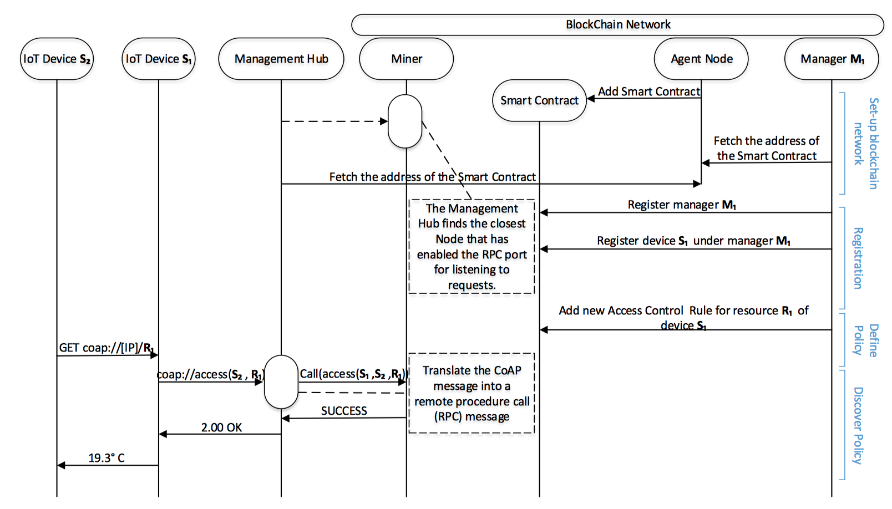

一、简述
本文从物联网（IoT）技术的基础知识开始，主要介绍了物联网的基本定义、主要通信协议，并对现在物联网技术所面临的挑战进行了详细分析。在第三章，研究区块链与物联网结合的契合点，分析区块链是如何解决物联网现在面临的挑战，并提供一些物联网部署在区块链的方法。在第四章，从区块链在物联网中身份标识治理的角度切入，通过对比现有中心化身份管理方法，研究基于区块链的实体身份标识可以如何解决物联网相关的痛点，并给出现有案例（学术上、工业上）。
二、认识IoT
物联网是一个计算设备、电子器械、物体、动物或人相互关联的系统，具有唯一标识符（UID）和通过网络传输数据、交互的能力，而无需人与人或人与计算机的互动，终极梦想是万物互联的世界。
如下图所示是一个物联网系统的样例，物联网生态系统由支持Web的智能设备组成，这些设备使用嵌入式处理器，传感器和通信硬件来收集、发送和处理从环境中获取的数据。 物联网设备通过连接到物联网网关或其他边缘设备来共享它们收集的传感器数据，其中数据被发送到云以进行本地分析或分析。 尽管人们可以与设备进行交互，但设备可以完成大部分工作而无需人工干预。
1. “三个维度”认识IoT
1.1 横向维度 - 物联网产业图谱
如下图所示，可以看到，身份管理以及安全控制贯穿整个生态架构。
1.2 纵向维度 - 物联网生态架构
可以简单把IoT核心架构分为4层模型：
- 应用程序层：对大量的数据进行处理、持久性存储、数据分析、数值预测；
- 平台服务层：主要包括数据管理、设备管理、应用集成、消息发布/订阅/传递、安全管理；
- 通信层：主要是支持数据的可靠传输，内置了感应层向管理控制层的通信机制，如Wifi、3G、LTE、 Ethernet等；
- 物理感应层：主要是设备、网关等硬件传感器和相应的传感网络；
1.3 时间维度 - 物联网的前世、今生与来世
在过去的几年中，前物联网从封闭的集中式大型机架构逐渐向以开放接入云为中心的物联网的替代方案发展；下一步物联网将在部署在多节点的分布式云上，实现真正的万物互联，区块链技术在这里充当重要的角色。
在这里作者由于知识储备原因（学术不精），主要简单介绍通信层的内容，在本章后面的内容展开介绍物联网技术现有的挑战，并在后面的章节介绍平台服务层的相关内容。
2. 现有IoT通信协议
如上图所示，
现有物联网中应用数据层的通信协议主要有以下几种：
- HTTP：因为其广泛的应用，兼容稳定性都很好，开发也简单，但在物联网大规模使用的情况下，实时性和消息一致性都不如MQTT协议来的表现出色，而且耗电量更大；
- Message Queuing Telemetry Transport(MQTT)：MQTT协议开销较小（带宽和能耗），支持永久性连接，减少重连带来的开销，在物联网中大规模的并发连接场景具有优势；
- Constrained Application Protocol(CoAP)：CoAP是一种可用于资源受限的设备上的数据应用协议，支持多播和低开销在物联网小型设备使用场景较实用；
- Extensible Messaging and Presence Protocol (XMPP)：XMPP支持实时通讯、即时消息；
在网络层的路由协议主要有 6LoWPAN与RPL，这两种协议都意在资源受限的设备上能轻松访问网络，但也将带来被攻击的可能，详情可见论文[8].
在 数据链路层的协议 一般就以频率、能耗、可用范围区分，以下图做对比总结：
3. 现有IoT方案存在的挑战
在过去的几年间，物联网垂直领域相关企业数量处于快速增长期，经过了幻想破灭期的洗礼，投资逐渐理性，技术逐渐成熟。虽然人们对于物联网可以推动许多商业机会、变革现有中心化体系有清楚的认识，但物联网还存在一系列的技术挑战，直接导致了全球物联网应用布局缓慢的局面。以下是对这些挑战的简述：
3.1 网络安全问题
物联网中的网络安全问题是最关键也是最致命的应用落地门槛。对于传统的Web安全而言，物联网设备往往条件更加严苛：设备条件通常是隔离的硬件，根据其部署条件，所有者往往无法有效监测到设备数据篡改；设备往往是和其他设备进行互联，管理这些M2M的交互、保证两端数据一致性与传统的C/S交互相比更加复杂；此外，物联网设备往往处于资源受限的状态（硬件性能、网络连接、电量低等），使得更加复杂的场景不能得以应用。因此，这种系统更加容易被网络攻击，在以下列出了几种物联网攻击方法与其相应的防御手段。
现存的IoT攻击方法与防御手段
物联网涵盖了从小型嵌入式处理芯片到大型高端服务器各种设备，因此遇到的安全问题都可能在不同层次不同级别。下图给出了从OSI网络模型自下往上地分析了物联网安全威胁的分类。各个攻击方式的具体防御手段可借鉴论文[2]，在这里不赘述。

3.2 访问控制与隐私保护
物联网设备每日生成大量的数据，可提供设备所有者或者用户所在的环境详细信息以及个人习惯、隐私数据。这些数据可以在没有任何明确的用户授权下收集，并有可能在某个支持IoT共享平台上暴露给第三方。更糟的情况制造商挂羊头卖狗肉，IoT设备主动收集与所提供服务无关的数据。
用户除了必须信任集中式服务提供商不会侵犯他们的隐私之外，还必须相信数据的传输具有保密性和完整性。任何不安全的数据传输都会使得恶人在未经授权的情况下窃听和收集数据。
3.3 设备管理
“普通物联网设备管理包括设备的配置、管理、监控、对故障的诊断以及纠正措施。关键物联网设备管理主要包括设备的注册、配置、关联、软件更新、固件升级以及整体控制管理。”（链接）
随着物联网的加速发展，服务提供商在满足管理要求方面遇到了一些挑战，主要包括以下两个方面：
- 集中式设备管理的挑战：随着设备规模扩大到一定范围，当前的集中式网络管理会出现明显瓶颈，设备监控、固件升级等的维护成本大幅增加；
- 事物身份(Identity of Things, IDoT)治理：
- 物联网设备的所有权和身份关系：设备的所有权在设备的生命周期内，从制造商、供应商、零售商和消费者处发生变化；如果设备被转售、退役或销毁，需要更改或撤销消费者的IoT设备所有权；
- 物联网设备的属性与关系：设备的属性包括制造商、品牌、序列号等；设备关系还包括设备-人、设备-设备、设备-服务等；如何处理这些复杂的关系也是一种挑战；
- 设备的访问控制：现有物联网设备访问控制都还是基于PKI体系，依赖于中心化PKI容易受到MITM（Man-In-The-Middle）攻击，CA单点故障也会带来系统加密体系全面崩盘的风险；
- 异构物联网设备的连通性：物联网范式需要数十亿异构设备的广泛连接，这种异构的连通性对于不同供应商开发的协议和解决方案的交互都是业界难题。
论文[12]对于现有的物联网设备管理平台进行了Benchmark评估测试，并展望未来的物联网设备管理平台。
3.4 规范化与协同操作
物联网标准由多个独立多国治理机构、联盟或组织提供支持（例如 IEEE、ETSI、IETF、W3C、OMG、OneM2M等）。这些标准涵盖了物联网产品与服务从通信技术到架构的多个方面，其中一些遵循中立的跨域方法，二其他一些仅适用于特定的垂直领域。各个标准组织还未形成统一的国际标准，各种设备编码之间相互孤立，有的甚至重复交叉。
要实现信息的互联互通和系统的有效协同，必须建立统一的物联网标识系统。建立统一的物联网标识还需兼容现有设备的异构编码标准。不同供应商设备的异构协同操作问题在2.3节已经提到。
3.5 数据治理
物联网设备产生的巨大数据量，难以在通信/传输、存储方面进行精细的管理。可扩展的基础架构对于处理大量不断增长的数据是有必要的。
数据管理涉及在线数据的聚合，同时提供事件日志、审计和存储，从而进行查询处理和数据分析。且在数据聚合前都应该从应用中抽象出复杂的语义，未经处理的数据面临着非均匀性（non-uniformity）和弱语义。此外许多物联网应用领域对时间要求很高，因此在考虑物联网设备的受限资源能力的同时，及时处理物联网数据也非常重要。
现有的集中式方法确实效率较高，但这些方法不能同时为数据完整性提供保证，并且在处理异构数据方面存在数据孤岛等的信任问题。
三、IoT Meets Blockchain
缘起
物联网的目标是尽可能简化概念，使智能对象通过互联网进行通信，以收集全面的数据并提供个性化的自动化服务，几乎不需要人工干预。为此，目前的物联网平台已经建在集中式模型上，中央服务器或代理提供数据处理，设备协调和授权等服务。 这种方法需要高端服务器，并且这种方法不适用于物与物自主交换数据的场景。 在集中式模型中，集中式服务器授权对象相互通信，因此当越来越多的设备通过Internet相互通信，极大提高了服务器的门槛要求。
在认识到区块链提供的机会及其潜在影响之后，研究人员和开发人员已经开始为物联网设计分布式的解决方案。 区块链的固有特性使其天然地成为开发物联网和分布式云计算的安全分布式结构的首选。
1. Blockchain可以解决IoT什么问题？如何解决？
1.1 支持异构协同操作
目前，物联网设备和协议的异构性限制了它们的协同操作性，并且由于区块链是与语义无关的分布式数据库，因此使用区块链作为物联网的网络控制机制将为其增加更大程度的适应性。 事实证明，区块链可以在异构硬件平台上运行，基于区块链的物联网框架有望适应不同的环境和用例，以满足物联网用户不断增长的需求和需求。
此外，在区块链中可以使用智能合约、跨链等方法将不同厂商、不同协议的设备连接起来，对设备产生的事务交易等消息进行订阅/发布，并结果记录在区块链上[9]。
1.2 安全与隐私保护
在物联网上确保隐私保密下和数据保护，大多数区块链网络都可以使用地址假名简单地保护用户隐私，且其链状结构按时间顺序连续地记录了数据，数据分布地在多个设备上记录，增加了篡改数据的成本，有效抵御DDoS等网络攻击方式。在未来的发展中，基于区块链的去中心化物联网网络消除了用户因为“互相不信任”而通过集中式的实体来处理的需要，从而防止恶意第三方实体收集用户的私人数据。
如何隐私保护？
通过区块链进行的所有交互都是公开可用且可验证的，因此存储在链上和链下的物联网数据通常保持加密，并且在区块链上强制执行授权访问的策略。但是由于区块链网络的可审计性需要通过公开数据访问，这也不符合隐私保护原则。所以，为了保持隐私，区块链技术本身并不充分，需要在可审计和隐私之间寻找有效的平衡。
现有在基于区块链的物联网框架中实现隐私保护的研究，包括利用智能合约执行访问策略的方案[15-16]、分层区块链架构[17]、通过假名地址更新在事务级别上提高区块链的隐私[18-19]；以及在密码学上做的改进，例如：将传感器数据通过属性加密保护隐私[20]，零知识证明[21]。
如何保证安全？
凭借decentralized public-key infrastructure（DPKI）、可容错设计、可审计以及内在的不受DDoS攻击等多个特性，区块链也可以保证交易网络传输安全的能力。相对于物联网现有的中心化的安全管理方法，区块链带来的技术革新会替代当前的安全方法，并为物联网提供改进的安全解决方案。
现有研究已经有一些方案，用于在不依赖第三方服务的情况下在物联网实施访问控制策略。
- 针对PKI改进：论文[22]提出了一种基于区块链的PKI方案，相对于中心化的PKI更具有容错性；
- 针对架构改进：论文[23]提出了一种多层区块链框架，数据存储和数据访问在单独的层中执行：(i).分布式数据存储层，特定地址的用户可以存储物联网数据；(ii).消息层，供存储层和访问控制层进行协商访问；(iii).访问控制层，具有权限的参与者才可以解密密文；
- 使用Token方法：论文[24]在区块链链中存储加密数据，并使用Token和智能合约策略来允许和撤销对数据的访问。
- 链下存储方法：论文[25]将数据存储在链下，使用分布式哈希表进行索引，在链上存储不同角色的访问控制权限，从而达到实现访问控制的目的。
1.3 Identity of Things的管理
区块链已被广泛用于身份授权、身份注册、所有权跟踪以及产品、商品和资产的监控。 像TrustChain这样的方法使用区块链来实现可信交易，同时保持分布式环境中的事务的完整性。 物联网设备也不例外。 区块链可用于物联网设备注册并提供身份，具有一组属性和复杂关系，可以上传并存储在区块链分布式分类账中。区块链还在物联网设备的供应链和生命周期的每个环节提供分布式管理、治理和追踪。
具体方案将会在第四章详细说明。
1.4 提高可用性
物联网代表了高可用的收集数据和提供自动功能智能设备。 物联网的网络控制机制需要高可用性，在涉及集中式服务器的体系结构中可能并非总是如此。 区块链的分布式架构，天然地容许部分节点/设备出错或掉线，也可以通过一些分布式共识协议识别故障。
1.5 降低维护成本
实现物联网全球普及的一个重要步骤是找到有效且经济的方法来处理整个物联网中传感器产生的大量数据。集中式云服务因为其计算和存储的价格更低，所以替代了原有集中式服务器的模式。但是数据表明，使用基于区块链的数据存储平台（例如Sia）证明了使用区块链存储数据的成本更低。Amazon S3服务器每个月存储1TB是25美元，Sia每月每TB是2美元。
1.6保证数据完整
物联网应用程序要求传输和分析数据的完整性，因此物联网框架需要对数据泄漏和破坏具有弹性。 区块链网络在节点上存储冗余的副本，这有助于维护数据完整性。
在论文[5]中有张图，可以很全面的展示Blockchain-based IoT的应用。
2. IoT如何部署在Blockchain上？
集中式的云服务在物联网的发展中作出了重要贡献，但在数据透明性方面，集中式云服务就像黑匣子一样，物联网用户无法控制和完全信任他们共享的数据。 物联网可以从区块链提供的分布式网络范例中受益，同时消除对集中式服务的信任需求。 然而，区块链仍处于研究和开发的早期阶段，集成物联网和区块链仍存在多项研究挑战。
物联网中涉及的各种各样的设备，这些设备都是资源限制的，无法托管区块链的整个副本或参与验证区块链的新块，使用区块链在物联网中实现绝对分布式是欠考虑的。 因此，重要的是决定物联网边缘中不同实体（设备，网关等）将扮演什么角色。
物联网边缘设备或网关作为简单的交易发起者（transaction-issuers）并具有可验证的区块链标识，而无需托管整个区块链副本，选取部分设备作为全节点参与共识和区块验证。以下是现研究关于如何集成区块链和物联网的一些方案：
物联网网关设备作为区块链端点：
在这种方案中，所有通信都通过区块链，而IoT网关则作为区块链网络的端点。在这种情况下，IoT设备将注册到网关设备，并且网关向区块链发出交易。这种方法可以跟踪涉及特定物联网网关和物联网服务的所有通信。此集成方案还可用于验证连接到不同网关的设备之间的通信。在这种方法中，并非所有传输的数据都需要存储在区块链中。区块链本身可以用作控制机制，智能合约充当可编程逻辑，而数据传输可以通过P2P技术进行。
设备作为区块链的交易发起者：
这种集成方案出自论文[26]，在上述的分析中，我们假设物联网设备实际上没有携带区块链的副本，而只是简单地向区块链发布交易。 与之前的方法类似，因安全考虑，所有IoT交互事件都会记录到区块链中。 在这种方法中，需要为IoT设备提供加密功能。 这种方法物联网设备和应用程序具有更高自治程度，而物联网硬件的计算复杂性增加。
互联的边缘设备作为区块链的端点：
在这种方法中，物联网网关和设备向区块链发布交易，并且可以与另外的链外通信。 这种方法可确保物联网设备之间的低延迟以及在区块链上记录特定交互。 这种集成方案更适合于交互频繁且需要高吞吐量、低延迟、可靠的物联网数据的场景。
基于云的区块链与物联网边缘混合：
这种方法是对先前集成方案的扩展，其中物联网用户可以选择将区块链用于记录某些物联网交互事件，其余事件直接发生在物联网设备之间。 这种方法利用区块链的分散记录保护以及实时物联网通信的优势。该方法的主要问题是如何优化实时发生的交互与通过区块链的交互之间的反应时差。
四、IoT与Blockchain-based ID Management
在物联网中，IDM主要可以包括以下几个部分：
- 身份验证（authentication）；
- 身份授权（authorization）；
- 访问控制管理；
- 设备所有权管理；
- 设备与人、设备与设备的关系管理；
此外，在传统的IDM通信方法里，还是使用基于中心化PKI的方案，如下图所示，用户之间进行通信需要多次轮训，且对中心CA机构极为依赖。
但这种方法由于一些物联网的特性（如可扩展性、协同操作性和移动性）而无法直接移植到物联网环境。这些特性要求对于物联网身份管理系统设计来说很重要。
1. 物联网身份管理系统应该有的特性
可扩展性（Scalability）
物联网技术的愿景是万物互联，当网络物理世界的个数达到一定数量，使用传统的集中式IDM方案，所有物联网标识由一个通用第三方维护以构建高度可扩展的IDM解决方案变得极不现实。现有的联邦式身份管理解决方案（例如，SAML）还是无法绕过信任问题，不能解决在无信任网络中如何建立信任的问题。因此IDM应该在分布式无信任网络中可扩展可信，而无需对任何安全机构进行集中控制。
协同操作性（Interoperability）
根据物体的通信范围、信息处理能力的不同，使用的通信协议也往往不同，如本文第二章所述，通信协议分为很多种，多样性和异构性导致设备之间的协同操作存在问题。设备的身份标识根据不同的标准也全然不同，现在仍然没有一种综合的方案。
可移动性（Mobility）
一些物联网设备有强大的移动能力，可移动性确保用户即使在移动时也能连续地连接服务。无论设备在何处都需要进行身份验证，获得相应的设备服务的授权和访问控制权限。
安全与隐私性（Security & Privacy）
安全与隐私是身份管理系统应该有的最基本特性，具体表现为数据安全、通信安全、隐私保护等。
2. IoT传统身份管理方案
2.1 传统IDM模型
数字身份管理系统负责管理用户的身份信息，由标识符（UserID、电子邮件、URL等），凭证（证书、令牌、生物识别等）和属性（角色、职位、特权等）。下图描绘了传统IDM的示例实例系统，包括三个主要利益相关者：主体（也称为用户），依赖方（也是称为服务提供商）和身份提供商（IdP）。
由此可见，在传统的IDM模型中，身份提供者IdP作为依赖方发挥了核心的作用。这种强依赖关系直接导致了信任问题（在中国不会出现这种情况）。而且，随着提供在线身份服务的服务商增加，用户需要记忆的自己的身份标识变得更多了。
2.2 联邦IDM模型
联邦IDM模型是一种较新的IDM模型，这种模型尝试在各大IdP之间建立信任关系，一个安全域中的用户可以从另一个域访问服务。例如，SAML、OpenID[28]和Shibboleth，允许用户仅使用一个身份登录到多个安全域并授予对属于同一联盟的各种系统的访问权限，即无论在一个域中对哪个身份进行身份验证，同一联盟中的另一个域提供的服务都可以根据其域提供的凭据进行访问。
论文[29]给出了现有传统身份管理方案的比较，如下表所示（节选）：
| 方案 | 可扩展性 | 协同操作性 | 可移动性 | 安全与隐私性 | 以用户为中心 |
|---|---|---|---|---|---|
| FIDIS | √ | √ | √ | √ | |
| SAML27 | √ | ||||
| OpenID[28] | √ | √ | |||
| Shibboleth | √ | ||||
| STORK | √ | √ | √ | ||
| PICOS | √ | √ | √ | √ | √ |
| Cardspace | √ | √ | √ | √ |
用户必须考虑来自物联网的所有实体，并协调不同安全域的应用加入IDMS，在异构环境中构建可协同操作性系统。但从上表可以看到，大多数的身份管理方案都无法处理可扩展性。虽然OpenID和PICOS等方法可以某种程度上具有可扩展性，但IoT需要更强大的分布式可扩展的底层对上层所有物联网实体的管理支撑。此外，现有的安全与隐私都建立在“用户都信任他们的IdP”的假设上，IdP的安全事故将会导致大批量用户数据泄露（Facebook账号泄露事件），并不能真正消除隐私问题。
总而言之，互联网上的当前身份管理系统已经从孤立模型演变为去中心化的、联邦制的和以用户为中心的身份管理解决方案。通常，一些大型在线服务提供商的IdMS成为其联合域中的通用身份提供商，例如：微信登录、Facebook登录、Google登录等登录方式。不可否认，以用户为中心的联邦式IDMS确实减轻了用户管理身份标识的复杂性。然而，安全性和隐私性尚未得到完美解决，因为用户必须完全信任他们身处中间的身份提供者，这些身份提供者看到每个用户与其在线服务提供商之间的所有活动，“Facebook用户账号泄露事件”就给我们敲响了警钟。因此，消除不必要的第三方并在无信任网络中构建可信身份提供商对于物联网环境至关重要。
3. 现有方案举例
本节先从学术界和工业界对Blockchain-based IDM与物联网的现状进行简单阐述，并提出个人观点；再进行实际举例，举出实际应用结合点，并附上现有方案。
3.1 相关综述
3.1.1 学术界综述
从学术研究的角度来看，基于区块链的IDM系统正在引起很多的关注，为数字身份提出新的解决方案：
- Hardjono[33]在准入式区块链环境中使用零知识证明引入了一种基于区块链的隐私保护身份解决方案，称为ChainAnchor。在ChainAnchor中，验证节点具有编写或处理事务的权限，而其他节点只能读取和验证事务。所有经过验证的节点都建立在防篡改硬件上，形成隐私保护层，为用户提供隐私保护服务；
- Lee[34]为物联网设备提出了基于区块链的身份和认证管理系统。 他们提出的解决方案将身份标识的生成和维护放在区块链上，作为一种即时服务，而不考虑通过设备使用区块链的交互或通信。 在这种情况下，基于区块链的身份标识仅用于去中心的身份验证目的；
- Kravitz[6]提出基于准入式区块链网络的解决方案，由于准入式的区块链网络里的用户可知，参与者之间物联网的接入更可信。此外，该方法利用设备组成员（DGM）机制，将多个设备和用户绑定，并且在执行事务时，在区块链中可以体现出所属成员。
3.1.2 工业界综述
在工业界有很多新兴的创业公司以及企业联盟，意图在区块链与物联网结合的大生态市场上分一杯羹：
- Trusted IoT Alliance：一个物联网开源软件基金会，其使命是利用区块链技术解决物联网去中心、异构等技术难点。其中不泛有IOTA等的区块链公司，纽约梅隆银行、西门子、思科等合作企业，以及几个物联网企业（区块链公司成员比物联网的还多）；
- IOTA：以Tangle闻名，将基于DAG区块链做大做强的方案。使用独特的方法来验证交易，使其成为物联网所需的大量数据交换的理想选择；
- slock.it
- blockpass
综上所述，实际上基于区块链的身份标识产品已经很多，相关学术论文也不少，但是实际上用在物联网领域的还真不多，个人认为主要原因有以下几点：
离不开PKI体系：不使用公钥体系，建起来的城堡就如同沙雕。PKI在物联网中并不能很好适配的主要原因就是其过度中心化的设计，常常容易带来性能瓶颈、单节点故障等问题。现有解决方案DPKI可以有效解决过度中心化的缺点，但其落地为时尚早， 真正的去中心化不切实际；
加密成本太高：物联网设备根据设备不同的职能有不一样的硬件情况，但普遍是资源限制的，运算能力弱，存储能力差，蓄电量低，这样就对安全通信、安全存储带来了一系列的挑战；同时，由于成本的关系，不可能给设备都配备上性能高的硬件条件，所以如何平衡安全和成本是一个主要问题：
再上图可以看到，在通信层使用TLS或轻量级DTLS可以抵抗中间人攻击等通信攻击方式；在针对软件或硬件攻击其密钥，可以使用ARM基于TEE(Trusted Execution Enviroment)/PSA(Platform Security Architecture)进行硬件隔离，存储密钥相关的数据；更深层次的硬件攻击可以使用SE(Secure Element)芯片级的安全保护，但是成本也会大大增加；
不能完全实现去中心化：如今DPKI等对中心化体系替换的方案还未成熟，完全去中心化不切实际，所以现在多是从单中心化转变为多中心化，在企业业务层面进行合作；
3.2 物联网身份管理与属性管理
分布式身份管理与属性管理是分布式经济的基础。在物联网中，设备与人与其他设备的关系，以及其所有权的变更，在不同时间不同地点的访问控制权限，都与分布式身份管理息息相关。如下图所示，是一个基于区块链的分布式身份标识系统的样例。
3.2.1 Securing User Identity and Transactions Symbiotically: IoT Meets Blockchain[6]
论文[6]基于传统PKI与联邦式IDM，提出了一种使用联盟链保护和管理多个物联网设备的分布式身份管理解决方案。该解决方案通过对非对称密钥的重发(rorating key)增加安全性并防止攻击，并提供设备成员DGM机制，可以保证成员内的设备发出Transaction时，区块链内可以认定是从属于哪个DGM发出的Transaction。并且可以调节设备存储量，对存储空间很小的物联网设备很友好。
1). 定义声明
- Enrollment Cert：长期存储固有属性，用于证明身份；
- Transaction Cert（TCert）：记录动态的属性，用于区块链交易；
- Transaction Cert Authority（TCA）：颁发TCert；
- Attribute CA（ACA）
- Kown Your Machine（KYM）
2). 授权密钥管理
生成TCA CA RootKey与Primary TCA的ID；
生成Primary TCA RootKey： \(TCA\_RootKey_{384bit}=HMAC(TCA\_CARootKey,TCA\_ID)\) ；
Primary TCA分发Template TCert给从属TCA，从属TCA负责颁发相应TCert： \(TCertsRoot_{384bit}=HMAC(TCA\_RootKey,''1''||KeyVersion)\) ；
从属TCA实例化TCert，对某个设备/人进行注册，生成Enrollment Cert与TCert，生成TCertOwnerRootKey：\(TCertOwnerRootKey_{384bit}=HMAC(TCertsRoot,EnrollmentPublicKey)\) ；
从属TCA派生出拓展密钥TCertOwnerExpansionKey与加密密钥TCertOwnerEncryptionKey：
\(TCertOwnerEncryptionKey\_{256bit}=HMAC(TCertOwnerRootKey,''1'')\ (256bit truncation)\)
\(TCertOwnerExpansionKey_{384bit}=HMAC(TCertOwnerRootKey,''2'')\)
生成TCertIndex，ConstantPad代表着在审计中的所属DGM设备： \(EncryptedTCertIndex=AES\_CBC\_Encrypt(TCertOwnerEncryptionKey,TCertIndex||ConstantPad)\)
生成TCert-specific拓展值： \[ \begin{align} TCertSpecificExpansionValu_{384bit}\\ & = \{HMAC(TCertOwnerExpansionKey,TCertIndex)\\ &||HMAC(TCertOwnerExpansionKey,TCertIndex+1)\} \end{align} \]
3). 密钥拓展
TCA可以将TCert的公钥和私钥进行派生，以符合一个群组多个设备的设计（和ID Mixer有区别），而且派生的过程中是与当前属性无关的，这个和面向对象的基类继承派生很相似，可以在继承属性的基础上添加资质证明等属性值，更有利于审计与分析。 \[ \begin{align} TCertPublicKey\\ &=EnrollmentPublicKey+TCertSpecificExpansionValue*G \\ TCertPrivateKey\\ &=(EnrollmentPrivateKey+TCertSpecificExpansionValue)\ (mod\ n) \end{align} \] \(G\) 是ECDSA中的系数。
4). 属性管理
生成TCA CA RootKey与Primary TCA的ID；
生成Primary TCA RootKey： \(TCA\_RootKey_{384bit}=HMAC(TCA\_CARootKey,TCA\_ID)\) ；
生成审计/从属TCA树根节点密钥：\(PreK\_Root=HMAC(TCA\_RootKey,''2''||KeyVersion)\) ；
\(K\_TCert=HMAC(PreK\_xyz,TCertID),\ where\ PreK\_xyz=HMAC(PreK\_Root,''xyzx'')\) ；
属性的加密密钥 \(Attribute\_EncryptionKey[i]\) 是由 \(K\_TCert\) 派生而成的，即 : \[ \begin{align} Attribute\_EncryptionKey[i] &=HMAC(K\_TCert,i)\\ Encrypted_Attribute[i] &=AES\_CBC\_Encrypt(Attribute\_EncryptionKey[i],Attribur[i]) \end{align} \]
被认证的属性为 \(Authenticated\_Attribute\) ： \[ \begin{align} Attribute\_HMACKey[i]&=HMAC(Attribute\_EncryptionKey[i],i)\\ Authenticated\_Attribute[i]&=HMAC(Attribute\_HMACKey[i],Attribute[i]) \end{align} \]
3.3 物联网密钥管理
在物联网场景中，设备与设备之间通信，更多的是通过多播/广播进行的群组通信可以与整个群组进行直接通信，这种方式更加高效。在物联网中的所有安全问题中，群组密钥管理是保护群组通信的基础之一。群组密钥本质上是由群组的所有成员共享的密钥，以便在使用该组密钥传输之前对所有组通信包进行加密。未授权用户可能由于网络错误或故意拦截而接收群组通信包，但是，如果没有正确的群组密钥，则非法用户无法解密所接收的包。
因为物联网设备资源的限制，现有的IP网络中的群组密钥管理方案不能直接用于物联网中。这意味着每个节点都无法存储大型密钥数据库或进行繁重的加密计算。
在3.3.1节介绍一种基于PUF的物联网密钥管理方法，虽然不是基于区块链的解决方案，但是或许可以从中寻找更加深入的结合点。
3.3.1 Efficient and Secure Group Key Management in IoT using Multistage Interconnected PUF[31]
论文[31]提出了一种基于物理上不可克隆方程(Physically Unclonable Function, PUF)设计的组密钥管理方案：多级互联PUF（Multistage Interconnected PUF, MIPUF），该方法可以在能量资源受限的环境中保护设备进行组通信。这种设计能够安全、高效地执行密钥管理任务：密钥分发、密钥存储和密钥更新。在最后的实验表明，与现有的基于ECC的密钥管理方案相比，可以节省47.33%的电源。
暂且跳过MIPUF的部分，假设作者提出的MIPUF嵌入芯片在计算效果上是正确的、有效的、节能的、安全的。我们主要看它的密钥管理部分。
密钥分发
密钥分发遵循着群组密钥分发协议，请看下图，不再赘述：

密钥存储
在密钥分发之后，当提供正确的配置参数时，可以从MIPUF中提取群组密钥。 与其他基于加密的密钥管理系统不同，这个方法不直接将群组密钥存储在内存中， 而是从密钥提示(hint) \(p_i\) 中提取群组密钥。因为只有当攻击者可以同时访问存储（包含 \(p_i,f_i,c_i^{\gamma_i}\) ）和MIPUF（\(\Bbb{F}^{\gamma_i}\)），才能获得真实的群组密钥。 只篡改其中一个不损害整个设计的安全性。此外，群组密钥仅用于接收或发送组消息，因此使用低功率MIPUF存储真实密钥也是高能效的。
密钥更新
只要群组成员进行动态更改，就需要重新生成，重新分发或更新群组密钥。当一个成员离开该组时，它应该无法解密未来的群组通信（forward security）; 当一个新成员加入时，它不应该能够解密过去的群组通信（backward security）。 出于安全考虑，在检测到潜在泄漏时，还应完全重新组密钥组密钥。 这里讨论所有三种可能的情况：
新成员加入
假设新的IoT节点\(N_{\alpha}\)意图加入组\(G\)，\(N_{\alpha} \notin G\)。在这种情况下，将新密钥重新分配给所有组成员是昂贵且低效的。 因此，控制单元向所有设备 \(\forall N_i \in G\) 发出消息 \(msg^{join}={E_{key_g}(key'_g)}\) 。现有的组成员计算并存储新的密钥提示 \(p'_i=r_i^{\gamma_i}\otimes key'_g\) 并在接收和解密\(msg^{join}\)时删除 \(key'_g\)。 新成员必须完成整个密钥分发过程。 使用此方法可以保留向后安全性，因为新成员没有关于旧组密钥的信息。
成员退出
从组中删除现有成员比添加新成员更复杂。假设将\(G\)群组分成m个子群 \(g_j\subset G =\{g_1,…,g_m\},1\leq j\leq m\) 。同一子群中的所有节点共享相同的配置参数\(\gamma_{g_j}\)。
假设IoT节点 \(N_{\beta}\in g_j \subset G\) 意图离开子群，其中子群中的所有成员使用相同的MIPUF配置参数\(\gamma_j\)。控制节点首先多播/广播m-1包含新密钥的消息\(msg_j^{leave}=\{E_{\gamma_i}(key'_g||H(\gamma_i))\}\) 发送给所有使用配置参数\(\gamma_i,i\neq j,1\leq i\leq m\)加密的子群。收到消息后，每个节点首先使用自己的配置参数 \(\gamma_i\) 对消息进行解密，并检查 \(H(\gamma_i)\) 是否与解密的消息中匹配。如果为正确，那么解密的新群密钥 \(key'_g\) 有效，否则，丢弃该消息。包括离开节点在内的\(g_j\)成员都不知道其他子组的配置参数，因此无法正确解密消息。控制单元应该通过以下方式对\(g_j\)的所有成员进行单播通信。分配新的群组密钥\(key'_g\)和新的配置\(\gamma'_j\)以替换\(\gamma_j\) 。
所有密钥更新
但是，可以通过完全重新映射输入 - 输出映射来重新调整MIPUF以解决建模攻击（modeling attacks）。 一旦生成的CRP总数超过计算的样本复杂度下限，我们建议执行完全更新。该下限等于打破MIPUF的训练集大小。 下面的等式描述了根据IPN模型参数的下限的样本大小，其中\(m\)是MIPUF中的节点的数量，并且\(n\)是MIPUF节点中的PUF的最大数量。 \(k=VC(\Bbb F)\)其中\(VC\)是Vapnik-Chervonenkis维度，\(\Bbb F\)是MIPUF中最大的单个PUF。 \(\delta\)是失败概率，\(\epsilon\) 是学习的错误。 \[ Sample\ complexity = \frac{(m\cdot k+m)\cdot n+lb(\frac{1}{\delta})}{\epsilon} \]
3.4 物联网权限管理
物联网场景比传统的C/S场景更加动态，设备状态、管理权、所有权变化更加频繁。当访问控制查询和更新变得更加频繁时，单个集中式访问控制服务器会存在明显的性能瓶颈。基于区块链技术的分布身份识别，具有可追溯、不可抵赖等特点更加适合物联网的场景。然而现有的方法还处在验证阶段，离不开中心化的PKI是不能从根本上改变现状的。
3.4.1 Blockchain Meets IoT: an Architecture for Scalable Access Management in IoT[32]
论文[31]提出了一种可用于仲裁物联网中的角色和权限的体系结构。该体系结构是基于区块链技术的物联网分布式访问控制系统，这种架构由概念验证实验支持，并在实际的物联网场景中进行了评估。
所提出的方法定义一个Management Hub代表物联网设备从区块链请求访问控制信息，其余所有设备都在区块链网络中具有唯一标识。设备在注册时，必须在管理员的控制下注册，并且一定要注册在一个Management Hub下，注册之后管理员便可以对该设备的访问控制权限进行设定。
在区块链中部署智能合约用于定义访问控制系统中所有的操作。管理者可以和智能合约交互，便于定义系统的访问控制策略。

上图显示了各个部件的交互情况。
3.5 设备生命周期的安全管理
区块链还可以在物联网设备的供应链和生命周期的每个环节提供可信赖的分布式管理，如下图所示，可以记录设备的所有权（ownership）。

- 在开发商处建立设备的Identity；
- 在交付时建立所有权(Ownership)，分发密钥对；
- 在部署时对设备参数化，建立访问控制以及配置设备 ；
- 在维护时，定期重新分发密钥，恢复、升级、重配置；
- 若存在更改所有权，需要在新的持有者重新分配密钥对、重新部署；
- 设备报废/退休，需要删除所有权。
4. IDM for IoT的挑战
4.1 访问控制
身份标识和访问控制始终是紧密相连的。在物联网中建立身份系统的目标是实现通信并规范设备和资源的授权过程。尽管基于区块链的访问控制在物联网领域是重要结合点，然而现存的方案中没有很好地解决物联网的访问控制。
传统的访问控制模型访问控制列表（ACLs）和基于角色的访问控制（RAC）模型由于其中心化的设计和扩展性差，早已落入历史洪流；传统方案的共同缺点都是其中心化管理（Admin，IdP等），中心化管理者为设备设定其访问权、角色与属性。因此，这些解决方案不适用于去中心化的可扩展的物联网系统。因此，物联网访问控制的主要挑战可以归结为两点（可扩展性和去中心化）：
- 可扩展性：如何设计有效的访问控制机制，以便于对多种多样的物联网实体（人、物、服务等）的访问权限进行管理，而无需担心用户、角色以及访问策略的快速增长；
- 去中心化：如果使用区块链技术去除“可信”第三方的IdP，如何在无信任的物联网环境构建访问控制机制？
4.2 隐私保护
基于身份标识的隐私保护也需要从重考虑。如本章第2节中所述，在传统的身份认证中，验证者从服务商或IdP中取得被验证者的信息，在这一步用户的信息往往被多次披露，并且中心化的IdP可以看到服务访问者和提供者之间的交互，存在个人隐私泄露的风险。从用户的角度来看，隐私保护包括两个方面：
- 来自IdP的身份信息保护；
- 来自服务提供商的敏感应用数据保护；
在基于区块链的分布式身份标识中，更改了以往的身份验证范式，由用户决定向谁现实敏感信息，而不是托管给IdP。当然，单纯依靠区块链技术还远远不够，还需要额外的隐私保护方案，例如将多方计算（MPC）和零知识证明（ZKP）引入区块链，可实现敏感信息的选择性披露，可实现真正的隐私。但是现今的学术界和工业界都由于方案的复杂性、性能瓶颈等问题，真正落地的不多。
4.3 性能/成本
性能其实与底层区块链的性能有关，能够承受数量众多的物联网设备进行信息交互的底层区块链平台的开发也具有一定的挑战性。其次，成本、安全、性能这三者如何平衡，仍然是产品能不能落地的重要因素，值得研究。
参考文献/链接
- What is internet of things (IoT)? - Definition from WhatIs.com
- Khan M A, Salah K. IoT security: Review, blockchain solutions, and open challenges[J]. Future Generation Computer Systems, 2018, 82: 395-411.
- M. Conoscenti, A. Vetro, J.C.D. Martin, Blockchain for the Internet of Things: A systematic literature Review, in: The 3rd International Symposium on Internet of Things: Systems, Management, and Security, IOTSMS-2016, 2016.
- Lo S K, Liu Y, Chia S Y, et al. Analysis of Blockchain Solutions for IoT: A Systematic Literature Review[J]. IEEE Access, 2019, 7: 58822-58835.
- Fernández-Caramés T M, Fraga-Lamas P. A Review on the Use of Blockchain for the Internet of Things[J]. IEEE Access, 2018, 6: 32979-33001.
- Kravitz D W, Cooper J. Securing user identity and transactions symbiotically: IoT meets blockchain[C]//2017 Global Internet of Things Summit (GIoTS). IEEE, 2017: 1-6.
- Internet of Things Protocols and Standards
- Pongle P, Chavan G. A survey: Attacks on RPL and 6LoWPAN in IoT[C]//2015 International conference on pervasive computing (ICPC). IEEE, 2015: 1-6.
- Ali M S, Vecchio M, Pincheira M, et al. Applications of blockchains in the Internet of Things: A comprehensive survey[J]. IEEE Communications Surveys & Tutorials, 2018, 21(2): 1676-1717.
- Gu H, Potkonjak M. Efficient and Secure Group Key Management in IoT using Multistage Interconnected PUF[C]//Proceedings of the International Symposium on Low Power Electronics and Design. ACM, 2018: 8.
- IoT device management: challenges, solutions, platforms, choices, market and future
- Biliyaminu U, Hamdan H, Lengyel L, Farkas K. Evaluation of IoT Device Management Tools, in: ACCSE 2018: The Third International Conference on Advances in Computation, Communications and Services, 2018.07.22-26, Barcelona, Spain.
- Sia combines a peer-to-peer network with blockchain technology to create the world's first decentralized storage platform.
- P. Otte, M. de Vos, J. Pouwelse, TrustChain: A Sybil-resistant scalable blockchain, Future Gener. Comput. Syst. (2017). http://dx.doi.org/10.1016/j.future.2017.08.048.
- A. Ouaddah, A. A. Elkalam, and A. A. Ouahman, “Towards a novel privacy-preserving access control model based on blockchain technology in iot,” in Europe and MENA Cooperation Advances in Information and Communication Technologies, 2017, pp. 523–533.
- A. Kosba, A. Miller, E. Shi, Z. Wen, and C. Papamanthou, “Hawk: The blockchain model of cryptography and privacy-preserving smart contracts,” in IEEE Symposium on Security and Privacy, 2016, pp. 839–858.
- M. S. Ali, K. Dolui, and F. Antonelli, “Iot data privacy via blockchains and ipfs,” in 7 th International Conference for the Internet of Things, 2017.
- J. Kang, R. Yu, X. Huang, M. Wu, S. Maharjan, S. Xie, and Y. Zhang, “Blockchain for secure and efficient data sharing in vehicular edge computing and networks,” IEEE Internet of Things Journal, pp. 1–1, 2018.
- Z. Li, J. Kang, R. Yu, D. Ye, Q. Deng, and Y. Zhang, “Consortium blockchain for secure energy trading in industrial internet of things,” IEEE Transactions on Industrial Informatics, vol. 14, no. 8, pp. 36903700, Aug 2018.
- Y. Rahulamathavan, R. C.-W. Phan, S. Misra, and M. Rajarajan, “Privacy-preserving blockchain based iot ecosystem using attributebased encryption,” 2017.
- A. Alcaide, E. Palomar, J. Montero-Castillo, and A. Ribagorda, “Anonymous authentication for privacy-preserving iot target-driven applications,” computers & security, vol. 37, pp. 111–123, 2013.
- L. Axon and M. Goldsmith, “Pb-pki: a privacy-aware blockchain-based pki,” 2016.
- S. H. Hashemi, F. Faghri, P. Rausch, and R. H. Campbell, “World of empowered iot users,” in Internet-of-Things Design and Implementation (IoTDI), 2016 IEEE First International Conference on. IEEE, 2016, pp. 13–24.
- O. Novo, “Blockchain meets iot: an architecture for scalable access management in iot,” IEEE Internet of Things Journal, 2018.
- H. Shafagh, L. Burkhalter, A. Hithnawi, and S. Duquennoy, “Towards blockchain-based auditable storage and sharing of iot data,” in Proc. of the Cloud Computing Security Workshop, 2017, pp. 45–50.
- A. Reyna, C. Martín, J. Chen, E. Soler, and M. Díaz, “On blockchain and its integration with iot. challenges and opportunities,” Future Generation Computer Systems, 2018.
- Security Services Technical Committee of OASIS—Security Assertion Markup Language (SAML) v2.0
- Recordon, D.; Reed, D. OpenID 2.0: A Platform for User-centric Identity Management. In Proceedings of the Second ACM Workshop on Digital Identity Management, Alexandria, VA, USA, 3 November 2006.
- Zhu X, Badr Y. Identity Management Systems for the Internet of Things: A Survey Towards Blockchain Solutions[J]. Sensors, 2018, 18(12): 4215.
- PICOS—Privacy and Identity Management for Community Services.
- Gu H, Potkonjak M. Efficient and Secure Group Key Management in IoT using Multistage Interconnected PUF[C]//Proceedings of the International Symposium on Low Power Electronics and Design. ACM, 2018: 8.
- Novo O. Blockchain meets IoT: An architecture for scalable access management in IoT[J]. IEEE Internet of Things Journal, 2018, 5(2): 1184-1195.
- Hardjono, T.; Pentland, A. Verifiable Anonymous Identities and Access Control in Permissioned Blockchains. 2016. Available online: http://connection.mit.edu/wp-content/uploads/sites/29/2014/12/ChainAnch or-Identities-04172016.pdf (accessed on 31 August 2018).
- J.-H. Lee, “Bidaas: blockchain based id as a service,” IEEE Access, vol. 6, pp. 2274–2278, 2018.
- Trust IoT Alliance
- The Next Generation of Distributed Ledger Technology | IOTA
- slock.it connects devices to the blockchain, enabling the economy of things
- KYC-as-a-Service for Regulated Industries